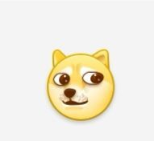

vscode搭建
vscode c环境配置教程
下载vscode，打开vscode，写一个c代码，coderunner，运行，over

啊，这还要你说？gungungun~
首先，先弄清楚vscode的性质，vscode本质上和你的记事本没啥区别，只不过要高级亿点点
所谓配置vscode是配置what？如果你有试过自己百度配置的话，大概会知道咱们是要配置三个json文件，但是既然你都打开这个博客了，我想你肯定不懂json，json是一种文本语言，vscode通过这个语言连接到编译器上，这样你写的代码才能够被转为机器码被执行。事实上，当你将gcc(gcc是什么自己百度)添加到环境变量(所谓环境变量，简单来说就是可以通过cmd命令快速打开的位置)时，你完全可以通过gcc命令，gdb命令去进行c语言的编译调试等(
但是这样逼格不够高)好，那么我们既然也不懂json，又想要用逼格高的vscode去写c语言代码，那么有没有人帮我们写呢？
于是乎，biying搜索谷雨同学，或者访问，然后下载配置工具，按照下面步骤操作:


好了，差不多就能用了